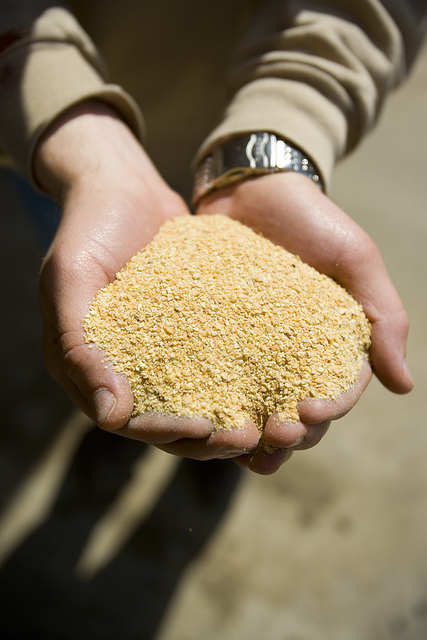
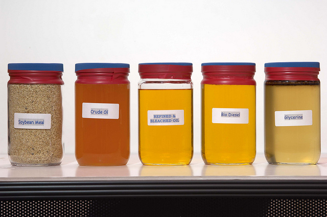

{kind=link}
{kind=link}
{kind=link}

16 The Soybean Crush
Interested in more? Please let me know by taking the survey!
In this Chapter we describe the physical process of converting soybeans into meal and oil, as well as the price relationship that is maintained between these highly related commodities. We saw in the chapter, ‘Forecasting Use of Soybeans in the WASDE Balance Sheet,’ that approximately half of the supply of soybeans in the U.S. is crushed into soybean meal and oil. Nearly all of the remainder of soybean supply is exported where most of it will be crushed abroad.
 Source: United Soybean Board, Flicker
Source: United Soybean Board, Flicker
16.1 Oilseed Processing
Now the most prevalent method for crushing soybeans is a method that uses a solvent to extract the oil from the soybean. Basically, soybeans are pre-treated, then flaked to destroy the cell walls so the solvent can get at the oil in the cells. A crude oil is then further processed refined to remove the solvent and other compounds like glycerin, leaving only pure soybean oil. The soybean flakes, minus the oil are then ground in to meal that can be used as a high protein livestock feed.

Source: United Soybean Board, Flicker

Source: United Soybean Board, Flicker

Source: United Soybean Board, Flicker
Historically, soybeans were processed by feeding soybeans into a mechanical press that literally squeezed the oil out. This process is less efficient and more time consuming - thus more costly. Nearly all commercially crushed soybeans are done with with the solvent extraction method.
Crushing soybeans yields about 11lbs of oil and 44lbs meal per bushel of soybeans, these yields can vary slightly, but most use these values in the price analysis that will follow.
16.2 Soybean Oil Uses
Soybean oil is used primarily as a food-grade product. It is not usually found in grocery stores as 100% soybean oil, but it will be present in oil branded as ‘cooking oil’ - where it is blended with other edible oils like corn oil and canola (also known as rapeseed) oil. Composition of cooking oil can vary from one purchase to the next as producers of cooking oil can blend the edible oil components based on relative prices.
Soybean oil also can be further processed into partially hydrogenated soybean oil. This is accomplished by literally adding hydrogen to the vegetable oil. The resulting product is widely used in processed food such as baked goods, crackers, frozen foods; it is used in a lot of processed foods generally speaking. It is a perfect ingredient in processed foods because it is solid at room temperature, and essentially never goes bad. If natural vegetable oils were used in processed foods the oil would go rancid in a short period of time.
Use of partially hydrogenated vegetable oils will decrease in coming years. Partially hydrogenated vegetable oils are examples of what is commonly referred to as trans fat in nutritional articles (and on the back of nutrition labels). Trans fat has been shown to increase LDL cholesteral and heart disease (Remig et al. 2010). The FDA announced a ban on most added trans fats in processed foods; the ban is set to take effect by 2018.

Source: United Soybean Board, Flicker
Soybean oil is also used in the production of biodiesel. This amounts to a small percentage of the total soybean oil produced, however.
16.3 Soybean Meal Uses
Soybean meal is used exclusively for livestock feed as a high protein component. Beef cattle, dairy cattle, hogs, and poultry use soybean meal in feed rations. Soybean meal provides a good source of protein, and combined with cereal grains like corn allow a complete balance of essential amino acids that hogs and poultry must have.

“Little pigs” by Dusan Bicanski - http://www.public-domain-image.com/public-domain-images-pictures-free-stock-photos/fauna-animals-public-domain-images-pictures/pigs-public-domain-images-pictures/little-pigs.jpg. Licensed under Public Domain via Wikimedia Commons.

“Poultry Classes Blog photo - Flickr - USDAgov” by U.S. Department of Agriculture - Poultry Classes Blog photo. Licensed under CC BY 2.0 via Wikimedia Commons.
16.4 Price Relationships
Since the input (soybeans) and outputs (oil and meal) are all commodities, and the production technology is fairly widely understood and replicable, the oilseed crushing business is a very competitive one. Recall from intermediate microeconomics that in the long run firms in a competitive market with identical technology (identical production functions) should not expected to earn economic profits or losses in the long run. If short-term profits exist, firms enter the market, shifting the supply curve out and reducing the equilibrium price until there is no more incentive to expand. This simple prediction has implications for our expectations about the relative prices of these commodities.
An soybean processor’s profit is roughly,
- \(P_{oil}*q_{oil} + P_{meal}*q_{meal} - P_{soybean}*q_{soybean}\)
where \(q_{oil}\) and \(q_{meal}\) are the quantities of oil and meal produced from \(q_{soybeans}\). Since the quantities in this profit expression are always in fixed proportion to the amount of soybeans processed, we can replace the quantities with \(q_{oil} = 11\) and \(q_{meal} = 44\) to get profit per bushel of soybeans processed.
- \(P_{oil}*11 + P_{meal}*44 - P_{soybean}*1\)
Now we are only focused on the price relationship. One consideration we need to adjust for is the units of the prices. Soybean oil is quoted in \(\$/lb\) so the \(P_{oil}*11\) does not need further adjustment. Soybean meal, however, is quoted in \(\$/ton\), so to put the price on a \(lbs/bushel\) basis we need to divide by 2000lbs, \(P_{meal}*44/2000\) or \(P_{meal}*0.022\).
So, adjusting equation 2. we get the expression for the Crush Spread.
- \(P_{oil}*11 + P_{meal}*0.022 - P_{soybean}\)
and this represents the Gross Processing Margin (GPM) for the soybean crushing plant. This spread is followed by industry participants as a gauge of profitability in the industry and as a signal of whether to expect expansion or contraction in the crush business.
Source: Quandl.com
16.5 The Board Crush
Since soybeans, soybean oil, and soybean meal all have actively traded futures contracts, the oil processing GPM calculated with futures prices is widely followed, along with the local crush spread oil processors would earn in their local cash markets. When the Crush Spread is calculated with futures prices instead of spot prices it is sometimes called the ‘Board Crush’ short-hand for the ‘Board of Trade’ Crush. Speculators trade this spread by selling (buying) oil and meal and buying (selling) soybeans. Oil processors use the Board Crush to hedge their positions in the cash markets for oil, meal, and soybeans and to ‘lock in’ processing margins.
Since in the cash market a soybean crusher buys soybeans and sells meal and oil, to hedge they will buy soybeans and sell meal and oil.
Notice that this futures spread will make money crushers are losing money in the cash market (as is the design of the hedge), in that the spread makes money if the cost of the business (buying soybeans) becomes higher - relatively speaking - and the revenue of the business (selling meal and oil) becomes smaller - relatively speaking.
Now to get the spread right, you need to buy soybeans and sell oil and meal in the correct proportions to mimic the business of crushing soybeans. Recall, 1 bushel of soybeans equals 11 lbs of oil and 44 lbs of meal. There are two versions of the spread that are fairly widely followed, the 1-1-1 spread and the 9-11-10 spread. The 1-1-1 spread is not as accurate in getting the proportions right, but it is easier to remember and implement as a trade. It would be cheaper to implement with brokers who charge commission per contract.
16.5.1 The 1-1-1 Spread
The 1-1-1 spread and it requires placing the following trades:
- Buy 1 contract soybean oil
- Buy 1 contract soybean meal
- Sell 1 contract soybeans
This position makes money when the spread widens, or oil and meal go up while soybeans goes down. This is called buying the spread. These trades will profit if soybean crushers profit goes up. Note this is the opposite of what soybean crushers will use to hedge.
Another version is to sell the spread.
- Sell 1 contract soybean oil
- Sell 1 contract soybean meal
- Buy 1 contract soybeans
This spread makes money when the spread narrows, or oil and meal go down while soybeans goes up. Soybean crushers can sell the spread (Sell oil and meal and buy soybean futures) to hedge their GPM, or speculators can sell the spread to speculate the the soybean crushing industry will become less profitable.
The 1-1-1 spread is a crude approximation of oil processing GPM but one needs to be careful about the quantities of each commodity represented. Futures contracts for soybean oil, soybean meal, and soybeans are for the following quantities:
- Soybean oil ~ 60,000lbs
- Soybean meal ~ 100 short tons or 200,000lbs
- Soybeans ~ 5,000 bushels
So that 1 contract of soybeans (5,000 bu) will produce
- \(5,000*11 = 55,000\) lbs of soybean oil
- \(5,000*44 = 220,000\) lbs of soybean meal
So the 1-1-1 spread does not represent equivalent quantities of soybeans, oil, and meal. It over hedges oil by 5,000 lbs and under hedges meal by 20,000 lbs.
16.5.2 The 9-11-10 Spread
The commercial oil processors use a 9-11-10 spread of 9 contracts of soybean oil, 11 contracts of soybean meal, and 10 contracts of soybeans to hedge their GPM.
Then the quantities match more closely. Ten contracts of soybeans produces
- \(5,000*10*11 = 550,000\) lbs of soybean oil
- \(5,000*10*44 = 2,200,000\) lbs of soybean meal
and the quantities of oil and meal represented by 9 and 11 contracts are as follows:
- \(9*60,000 = 540,000\) lbs of soybean oil
- \(11*200,000 = 2,200,000\) lbs of soybean meal
So the quantities match except for being under hedged by 10,000 lbs in soybean oil.
16.6 Readings
A publication prepared for the United Soybean Board, a marketing association of for American soybean farmers and funded by the soybean checkoff.1
A DTN article that has a nice graphic of historical crush margins.
16.7 References
16.8 Exercises
In this weeks exercises we will put ourselves in the role of risk manager for a commercial soybean crushing facility. Suppose our facility we crush 50,000 bushels of soybeans per month.
The following file contains crush prices on the forward curve for the first of July, Aug, Sep and Oct of 2017. Also provided are the forward bases for each commodity in each date.
Recall the product yields:
| Input/Output | Yield |
|---|---|
| Soybeans | 1 bu |
| Oil | 11 lbs |
| Meal | 44 lbs |
And recall a soybean crusher’s gross product margin in $’s is
\(GPM = P_{oil}/100*11 + P_{meal}*44/2000 - P_{soybean}/100\)
When oil and soybean prices are in cents, and meal prices are in $/ton.
- Now suppose that on July 3, 2017 you observe the prices (provided in the excel spreadsheet) on the crush forward curve. Create three new columns in N, O, and P for AugGPM, SepGPM, and OctGPM, respectively. Compute the forward gross processing margin on July 3 for Aug, Sep, and Oct expiration. Note that this is just like the flour mill hedging problem from Chapter 4, but there are three products to hedge.
This is akin to just observing the forward futures prices in the flour mill problem. But in this example we are really concerned about the margins in soybean crushing so we have to compute that ourselves.
Suppose we hedged the forward margins we see offered on the forward curve for Aug. What futures trades do we make?
In row 9 create headers for a new table similar to the one we used in Ch 4 for the flour mill hedging example. Except here create the following columns:
Dates, Action in Futures, Action in Cash, Remaining Futures Positions, Net Cost Soybeans (Cash and futures combined) Net Revenue Oil (Cash and futures combined) Net Revenue Meal (Cash and Futures Combined) Hedged Processing Profit Hedged GPM $/bu. There should be two rows with dates 7/3/2017 and 8/1/2017.
Fill in each cell (except in the first row there is only the futures action cell to fill in).
What are the things that cause our Hedged GPM to be different than the AugGPM we observed on the futures forward curve on 7/3/2017?
Remig, Valentina, Barry Franklin, Simeon Margolis, Georgia Kostas, Theresa Nece, and James C. Street. 2010. “Trans Fats in America: A Review of Their Use, Consumption, Health Implications, and Regulation.” Journal of the American Dietetic Association 110 (4): 585–92. https://doi.org/10.1016/j.jada.2009.12.024.
Funds raised by every soybean farmer contributing 0.5% of the market price of every bushel of soybeans sold are directed by the United Soybean Board. This group engages in research and market development and expansion activities.↩︎